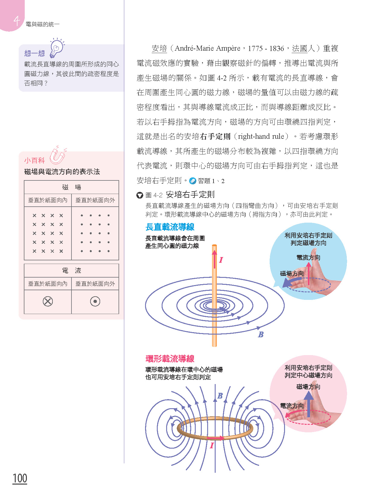

龍騰普高物理 數位互動教材
4-2 電流的磁效應
安培（André-Marie Ampère）重複電流磁效應的實驗，藉由觀察磁針的偏轉，推導出電流與所產生磁場的關係。如圖 4-2 所示，載有電流的長直導線，會在周圍產生同心圓的磁力線。

▲ 圖 4-2 安培右手定則：長直載流導線產生的磁場若以右手拇指指為電流方向，磁場的方向可由環繞四指判定，這就是出名的安培右手定則（right-hand rule）。
安培（André-Marie Ampère）重複電流磁效應的實驗，藉由觀察磁針的偏轉，推導出電流與所產生磁場的關係。如圖 4-2 所示，載有電流的長直導線，會在周圍產生同心圓的磁力線。

▲ 圖 4-2 安培右手定則：長直載流導線產生的磁場若以右手拇指指為電流方向，磁場的方向可由環繞四指判定，這就是出名的安培右手定則（right-hand rule）。
正在啟動虛擬實驗室...